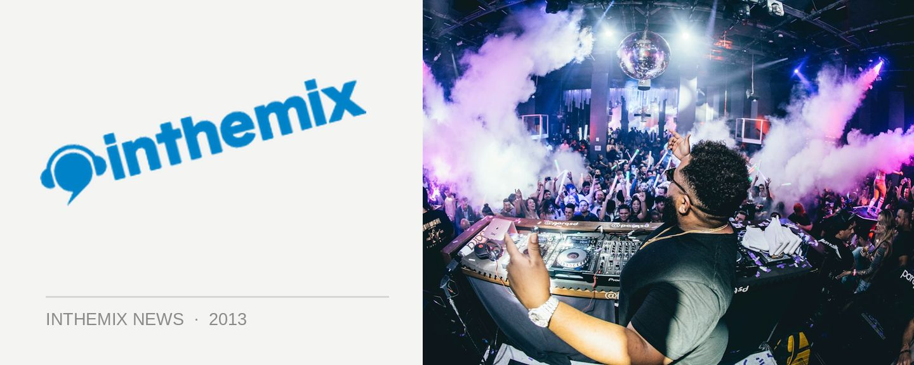

Big names locked in for Amsterdam Dance Event 2013
Over the years the Amsterdam Dance Event has established itself as one of the dance industry’s premier conferences, drawing a huge selection of DJs/producers, label managers, publicists, booking agents and beyond. Even more impressive though are the range of parties and club nights that explode across Amsterdam, and in 2013 as many as 2,000 DJs and live acts are set to perform across more than 90 different venues throughout the week.
ADE has confirmed the first selection of artists who will be performing during the conference, and unsurprisingly it’s a seminal list of artists from across the dance spectrum, starting with big EDM players like Tiesto and Calvin Harris, taking in veterans like Carl Cox and Danny Tenaglia, and continuing through to rising names like Maya Jane Coles and Maceo Plex.
On the conference side of things, ADE has also begun the drip feed of who will be speaking and presenting panels. Shailendra Singh, founder of India’s Sunburn festival (and one of inthemix’s 50 Most Powerful People In EDM) will be presenting a Q&A session, alongside SFX Entertainment’s head of acquisitions Shelly Finkel and techno heavyweight Richie Hawtin. You can dig into the full ADE line-up over at its website.
The first selection of artists confirmed to perform during ADE include:
Adam Beyer
Adana Twins
Aeroplane
Agoria
Alan Fitzpatrick
Andy C
Anja Schneider
Awanto 3
BoeBoe
Buraka Som Sistema
Calvin Harris
Carl Cox
Carl Craig
Danny Avila
Danny Daze
Danny Tenaglia
Dave Clarke
Dem Slackers
Dennis Ferrer
DJ Tennis
Dosem
Dubfire
Eelke Kleijn
Egbert
Fritz Kalkbrenner
Gaiser
Gomes
Gui Boratto
Guy J
Hobo
Joel Mull
John Digweed
Joran van Pol
Joseph Capriati
Karenn
Kenny Larkin
Kölsch Live
Kraak & Smaak
Laurent Garnier
Loco Dice
Maceo Plex
Maetrik
Magda
Mathew Jonson
Maya Jane Coles
Michael Mayer
Mirko Loko
Moderat
Nic Fanciulli
Nicole Moudaber
Noir
Oliver Schories
Pachanga Boys
Paco Osuna
Pan-Pot
Patrice Bäumel
Paul Oakenfold
Pete Tong
Prosumer
Ricardo Villalobos
Richie Hawtin
San Proper
Schlachthofbronx
Sebo K
Secret Cinema
Tale Of Us
Technasia
The Flexican
Tiësto
Timo Maas
Vato Gonzalez
Yellow Claw